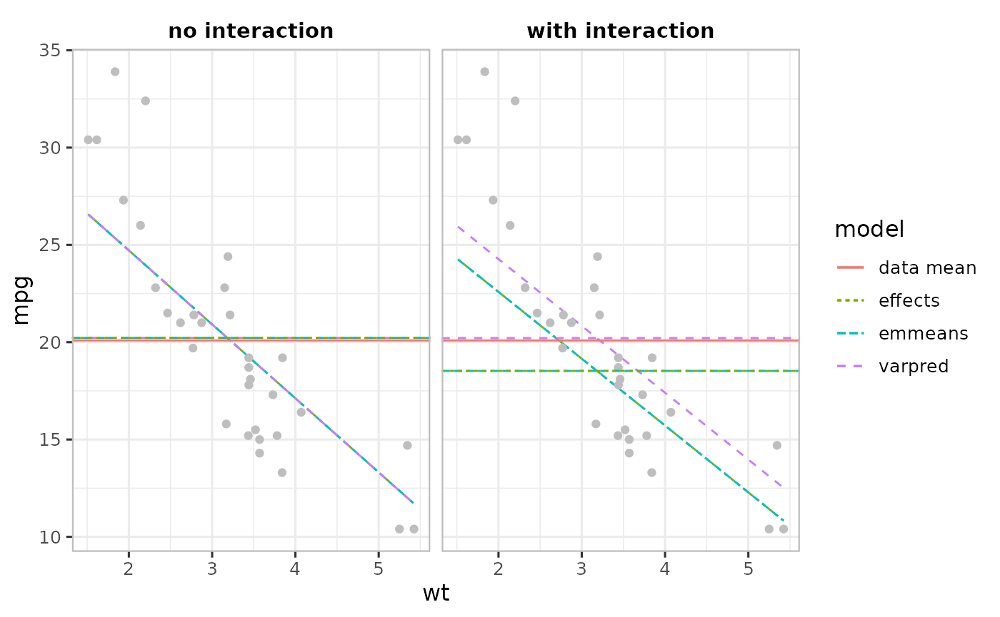
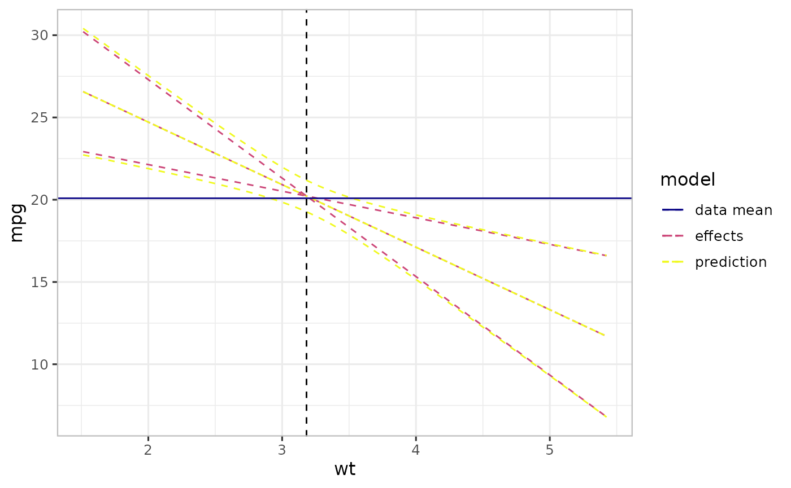
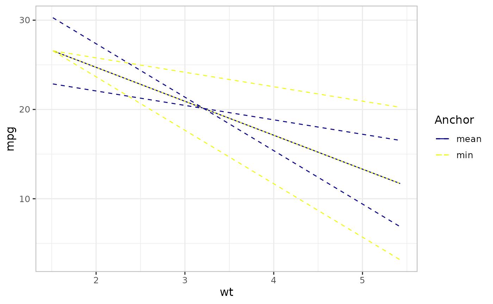

Outcome plots
Bicko Cygu, Ben Bolker, Jonathan Dushoff
vapred_intro.RmdMotivation
The development of this package is motivated by the water, sanitation, and hygiene (WaSH) data in which we were interested in investigating the contribution of demographic and socio-economic factors to improved WaSH indicators among the slum dwellers in Nairobi, Kenya. We noticed that the predictions we generated using the existing packages consistently over- or under- estimated the observed proportions; and did not align well with the observed data points. In other words, what we call bias. There are several (challenges) reasons for this, including:
- the choice of the reference point
- uncertainty estimation – the choice of anchor for computing confidence intervals
- biases induced by non-linear averaging due to non-linear transformation in generalized linear models
Introduction
An outcome plot (often called effect or prediction plot), plots focal predictor on the x-axis and central estimate (predicted values) on the y-axis. The resulting plot provide a useful way to summarize the results from a regression model; and depend on how we deal with the above challenges.
Mean-based approach
In a model with non-focal predictors such as multivariate models, reference points (values chosen for non-focal predictors) can be chosen as the average of the non-focal linear predictor variables (columns of the model matrix corresponding to non-focal predictors) – we call this approach mean-based reference point and is currently not implemented in commonly used R software .
To illustrate this, we use datasets::mtcars dataset to fit two models: 1) one without interaction, and 2) one with interaction between predictors.
df <- datasets::mtcars
## No interaction model
mod1 <- lm(mpg ~ wt + disp + hp, df)
## Model with interaction
mod2 <- lm(mpg ~ wt + disp*hp, df)If we consider wt as the focal predictor, then the remaining (disp and hp) are non-focal predictors. We use varpred, emmeans and Effects for comparison.
vapred package:
-
bias.adjust="none": to generate mean-based - All the three packages have different ways of generating values of focal predictor. For comparison, we use quantile and generate same focal values. Unless you want to compare with same values, this is not necessary.
library(varpred)
varpredtheme()
## generate values for focal predictor
steps <- 500
quant <- seq(0, 1, length.out=steps)
wt_values <- quantile(df$wt, quant, names=FALSE) |> unique()
## No interaction
vpred1 <- varpred(mod=mod1
, focal_predictors="wt"
, at=list(wt=wt_values)
, bias.adjust="none"
, modelname="varpred: no interaction"
)
## With interaction
vpred2 <- varpred(mod=mod2
, focal_predictors="wt"
, at=list(wt=wt_values)
, bias.adjust="none"
, modelname="varpred: with interaction"
)
names_use <- vpred2 |> head() |> colnames()emmeans package:
library(emmeans)
em1 <- emmeans(mod1
, specs=~wt
, at=list(wt=wt_values)
)
em1 <- em1 |> data.frame()
em1$model <- "emmeans: no interaction"
em1$df <- NULL
colnames(em1) <- names_use
em2 <- emmeans(mod2
, specs=~wt
, at=list(wt=wt_values)
)
em2 <- em2 |> data.frame()
em2$model <- "emmeans: with interaction"
em2$df <- NULL
colnames(em2) <- names_useEffects package:
library(effects)
#> Loading required package: carData
#> lattice theme set by effectsTheme()
#> See ?effectsTheme for details.
ef1 <- Effect("wt"
, mod1
, xlevels=list(wt=wt_values)
)
ef1 <- ef1 |> data.frame()
ef1$model <- "effects: no interaction"
colnames(ef1) <- names_use
ef2 <- Effect("wt"
, mod2
, xlevels=list(wt=wt_values)
)
ef2 <- ef2 |> data.frame()
ef2$model <- "effects: with interaction"
colnames(ef2) <- names_useWe can use varpred::combinevarpred to combine and compared the estimates:
-
attrvpred: convertsemmeansandeffectsobjects tovarpred -
varpred::getmeans: calculates marginal means of the estimates to compare with the data mean (mean of observed data)
The plot below compares the central estimates (trend lines), together with their mean (horizontal lines) with the data mean (mean of mpg) and the observed data (grey points).
library(ggplot2)
## Combine emmeans, effects and varpred objects
## and convert all to varpred objects for ploting
attrvpred <- function(obj) {
if (!inherits(obj, "varpred")) {
temp_obj <- list()
obj$method <- gsub(".*\\: ", "", obj$model)
obj$model <- gsub("\\:.*", "", obj$model)
temp_obj$preds <- obj
class(temp_obj) <- "varpred"
return(temp_obj)
} else {
obj$preds$method <- gsub(".*\\: ", "", obj$preds$model)
obj$preds$model <- gsub("\\:.*", "", obj$preds$model)
return(obj)
}
}
all_preds <- lapply(list(vpred1, vpred2, em1, em2, ef1, ef2), attrvpred)
## Compute marginal means: mean of the estimates
all_means <- lapply(all_preds, function(x){
model <- x$preds$model[[1]]
method <- x$preds$method[[1]]
m <- getmeans(x, focal="wt", modelname=model)
m$method <- method
return(m)
})
all_means <- do.call("rbind", all_means)
## Data mean
df_mean <- data.frame(mpg=mean(df$mpg)
, model="data mean"
)
## Plot all the estimates
p1 <- (combinevarpred(all_preds, plotit=TRUE, ci=FALSE)
+ geom_point(data=df, aes(x=wt, y=mpg), col="grey")
+ geom_hline(data=df_mean, aes(yintercept=mpg, color=model, linetype=model))
+ geom_hline(data=all_means, aes(yintercept=fit, colour=model, linetype=model))
+ facet_wrap(~method)
)
print(p1)
In the absence of interaction (left Figure), the three packages produce identical estimates and their respective averages closely match the data mean. However, in the presence of interactions, the estimates from emmeans and effects are identical but differ from varpred’s, which is very close to the data mean.
The packages emmeans and effects use the average of the input variables (mean of disp and hp) as the reference point as opposed to model-center approach varpred (average of the linear predictor variables). In the simple model (left Figure above) input variables are the same as the linear predictor variables, so all the three methods produce identical results. In the interaction model (right Figure above), there is an additional linear predictor variable (disp*hp). emmeans and effects first average the input variables to compute \(\mathrm{\bar{disp}}\star\mathrm{\bar{hp}}\) while varpred first calculates the corresponding vector of linear predictor values and then averages.
Prediction and effect plots
The major distinction between the two lies on how we describe the uncertainty around the central estimates (trend lines in the previous Figures). The prediction plot captures all the sources of uncertainty, including that of intercept, non-focal predictors and random effects. On the other hand, effect plot takes into account the uncertainty associated with the focal predictor only. This way, we expect an effect plot to have narrower confidence intervals (CIs) then a prediction plot.
It is not easy to generate effect plots in emmeans and effects. A possible way to achieve this in emmeans and effects is to use a zeroed-out (see varpred::zero_vcov) covariance matrix, but this only works when the input variables are centered prior to model fitting, in case of numerical variables, and more complicated when the input variables are categorical.
In varpred, to generate effect plot, we set isolate=TRUE (default), otherwise (isolate=FALSE) prediction plot. We consider vpred1 generated above, which is an effect plot, and now generate a prediction for the same model (mod1).
## prediction-styled plot: set isolate=FALSE
vpred1_pred <- varpred(mod=mod1
, focal_predictors="wt"
, isolate=FALSE
, at=list(wt=wt_values)
, bias.adjust="none"
, modelname="prediction"
)
## Rename vpred1
vpred1$preds$model <- "effects"
p2 <- (list(vpred1, vpred1_pred)
|> combinevarpred(plotit=TRUE)
+ geom_hline(data=df_mean, aes(yintercept=mpg, color=model, linetype=model))
+ geom_vline(xintercept=mean(wt_values), lty=2)
)
print(p2)
The Figure above shows a prediction (-styled) and an effect (-styled) plot. The horizontal line is the mean of the data (mean of mpg) while the vertical one is the mean of the focal predictor (wt) – we call this center point. The wider curves correspond to the conventional prediction curves (prediction-styled plot), while the narrower curves crossing at the center point. For a simple linear model, effect-styled curves cross at the center point. In other words, effects-styled plots provide a way to generate effects indicating uncertainty due only to changes in the focal predictor.
Anchor
To generate an effect-styled plot, we need a value of the focal predictor to compute CIs. We call this an anchor. The anchor choice does not affect the central estimate, nor prediction-style plot. The default value is the center point of the linear predictor variables corresponding to the focal predictor. For example, in the previous Figure, mean of wt is used as the default choice.
This is particularly important when we want to show an effect at a particular value of the focal predictor other than its mean (center point). For example, at \(0\), minimum of the focal predictor, etc. To implement this in varpred, set the anchor value using isolate.value and isolate must be TRUE.
## Min of wt
anchor0 <- varpred(mod1
, "wt"
, isolate=TRUE
, isolate.value=min(df$wt) # min anchor
, modelname="min"
)
## mean-anchored (default)
anchor0.5 <- varpred(mod1
, "wt"
, isolate=TRUE
, modelname="mean"
)
p3 <- (list(anchor0, anchor0.5)
|> combinevarpred() # No plot
|> plot()
+ labs(colour="Anchor", linetype="Anchor")
)
print(p3)